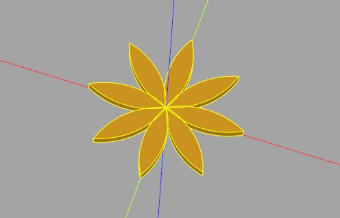
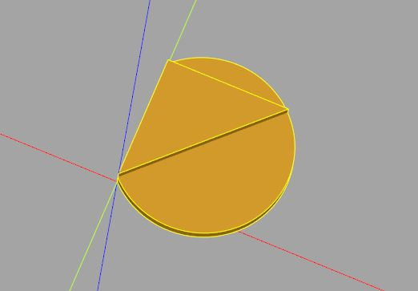
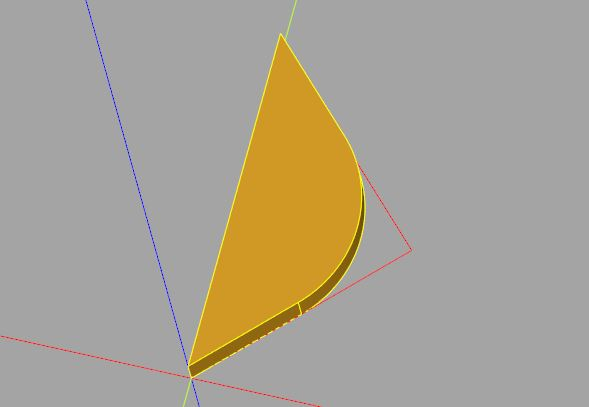
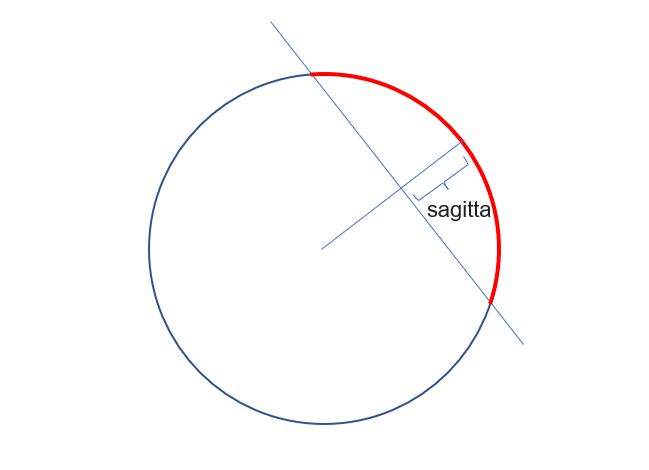
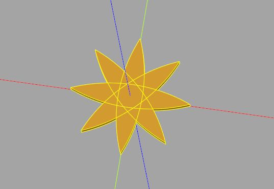

圓弧
November 26, 2021Workplane 提供了多個建立圓弧的方法，包括了 radiusArc、threePointArc、tangentArcPoint 與 sagittaArc。
radiusArc
如果想畫一個圓弧通過目前的點與指定的終點，可以使用 radiusArc，半徑會用來計算出圓心，因為只有兩個點，可能的圓心會有兩個，透過半徑的正負可以決定使用哪個作為圓心。
來畫朵簡單的花吧！
import cadquery as cq
petal = (cq.Workplane()
.radiusArc((10, 0), 10)
.radiusArc((0, 0), 10)
.wire()
.extrude(1)
)
flower = cq.Workplane()
for i in range(8):
flower.add(petal.rotate((0, 0, 0), (0, 0, 1), 45 * i))
show_object(flower)
這會顯示以下的結果：

threePointArc
threePointArc 是用目前的點、指定的另外兩個點構成三角形，然後計算出三角形的外接圓，取通過目前的點、指定的另外兩點之弧：
import cadquery as cq
arc = (cq.Workplane()
.threePointArc((10, 10), (0, 10)).close()
.extrude(1)
)
tri = (cq.Workplane()
.lineTo(10, 10)
.lineTo(0, 10)
.close()
.extrude(2)
)
這個範例畫出了三點弧與三角形，以便觀察三角形、外接圓與弧的關係：

tangentArcPoint
如果你畫了一條線，想作為切線建立圓弧，可以使用 tangentArcPoint，指定半徑與圓弧的終點，這蠻適合用來在折線上建立圓角：
import cadquery as cq
tri = (cq.Workplane()
.lineTo(10, 10)
.lineTo(0, 20)
.close()
)
arc = (cq.Workplane()
.lineTo(5, 5)
.tangentArcPoint((5, 15), relative = False)
.lineTo(0, 20)
.close()
.extrude(2)
)
tangentArcPoint 的 relative 預設為 True，表示指定終點時是相對於目前的點，這邊的範例使用絕對座標，來看看畫出來的模型：

sagittaArc
sagittaArc 可以使用目前的點、終點與矢量（sagitta）來建立弧形，矢量是指：

同樣地，可以藉由矢量的正負來決定圓弧的圓心會在哪一邊。
再來畫一朵簡單的花吧！
import cadquery as cq
petal = (cq.Workplane()
.moveTo(0, -10)
.sagittaArc((0, 10), 2)
.sagittaArc((0, -10), 2)
.wire()
.extrude(1)
)
flower = cq.Workplane()
for i in range(8):
flower.add(petal.rotate((0, 0, 0), (0, 0, 1), 45 * i))
show_object(flower)
這會顯示出以下的結果：

這邊畫花的範例，都是用一個 Workplane 當容器收集花瓣，add 並不會自動進行聯集，若要聯集，記得收集完後呼叫 combine 方法，這邊的範例為了能看出有弧，最後並沒有呼叫 combine。